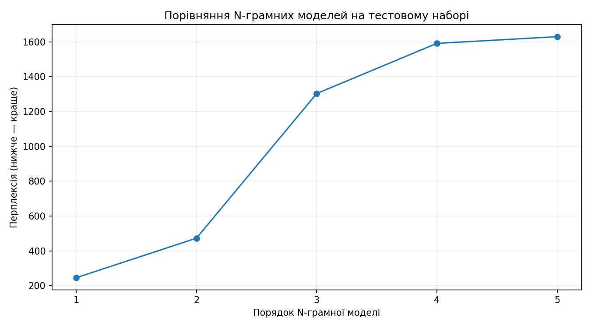
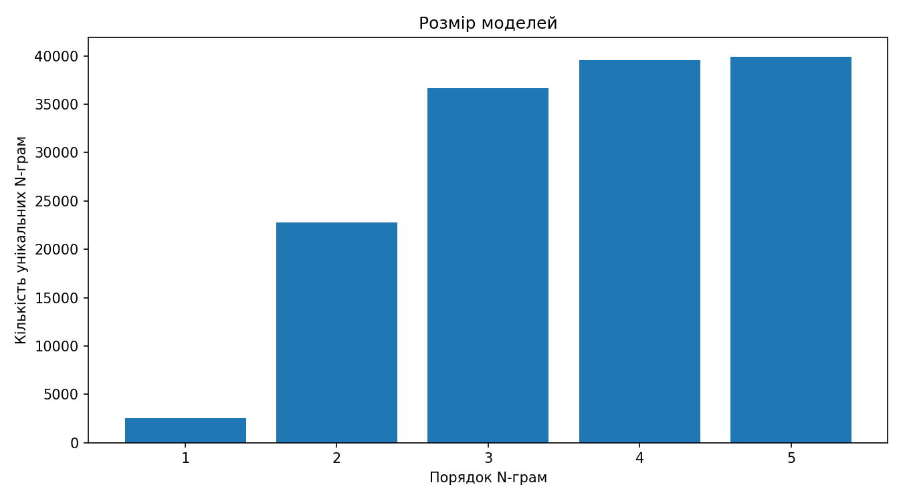

Дослідження системи автозавершення тексту на основі уніграм, біграм, триграм, 4- та 5-грам. Частоти, ймовірності Add-k, перплексія та інтерактивна демонстрація на корпусі Шекспіра.
Відкладений тест 20% · seed 42 · мінімальна частота 2 · k=0,5
Натискай на пропоновані слова, щоб дописувати текст. Це браузерна демоверсія з найпоширенішими контекстами; повний інтерактивний інтерфейс є в Colab.
Система рахує, скільки разів слово зустрічається після заданої послідовності, та оцінює його умовну ймовірність.
Згладжування Add-k надає ненульову ймовірність словам, які не траплялися в конкретному контексті.
Backoff переходить до коротшого контексту, якщо потрібної N-грами немає серед контекстів демомоделі.
Інтерактивні варіанти обмежені збереженими топ-20 словами для частих контекстів; це не повний словник Python-моделі.

Нижче — краще. Для невеликого корпусу 4–5-грамам часто бракує повторів контексту.
| Модель | Перплексія ↓ |
|---|
Обчислено через суму логарифмів ймовірностей на тестових токенах, включно з маркером кінця речення.

<unk> та п'ять моделей N-грам.ipywidgets у Google Colab з кнопками для підстановки слів.